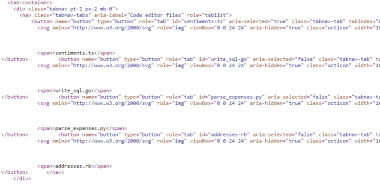
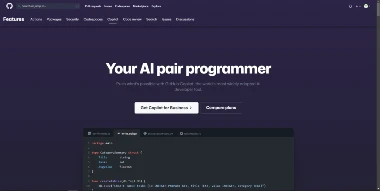

Code
The code for github's copilot page is very semantic and clean. One thing that I found interesting was that they created their own element called tab-container and implemented it on their page.
User Interface
The user interface of copilot's page is smooth. It is clearly targeting the programmers because it uses a dark theme. The typography is easy to read and succinct. As you move throughout the page the visual design and layout update with scroll events which is very pleasing to look at.
User Experience
Upon entering the site your attention is centered on what copilot is and why it is used. The app is simple, yet informative. I didn't have any issues while nagivating the site. Scroll about a third through the page and you are greeted by a clear and compelling call-to-action.
Summary
Github Copilot's website is aimed at developers. The code is clean and semantic. The user interface is beautiful and quick to change with scroll events. The user experience is nice and simple. There isn't much to confuse the average user/developer entering the site for the first time.